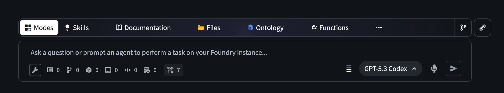
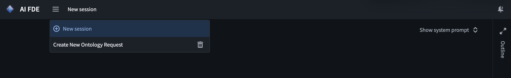
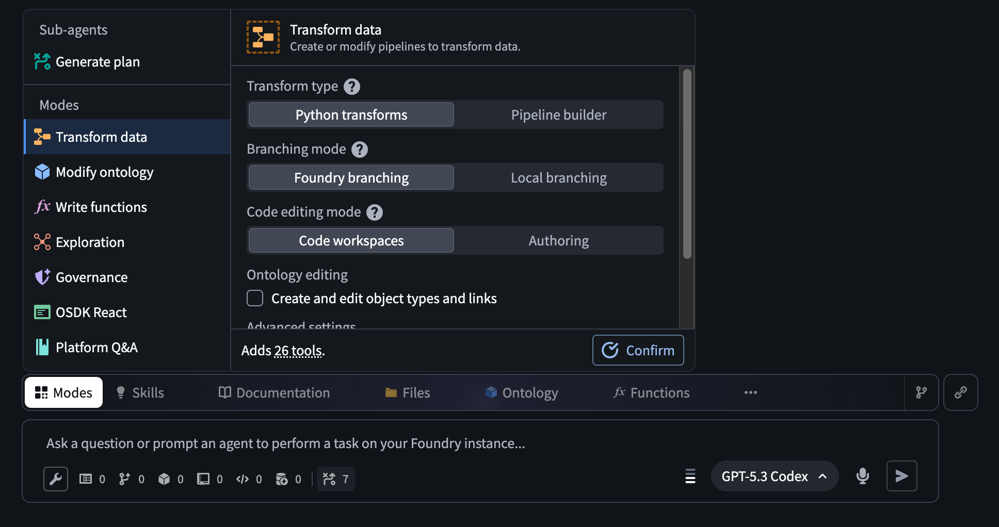
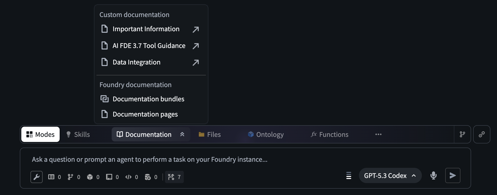
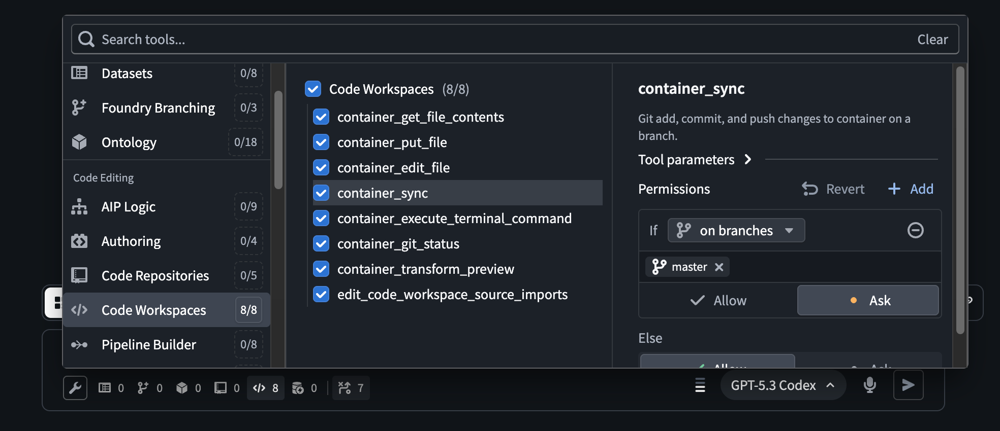
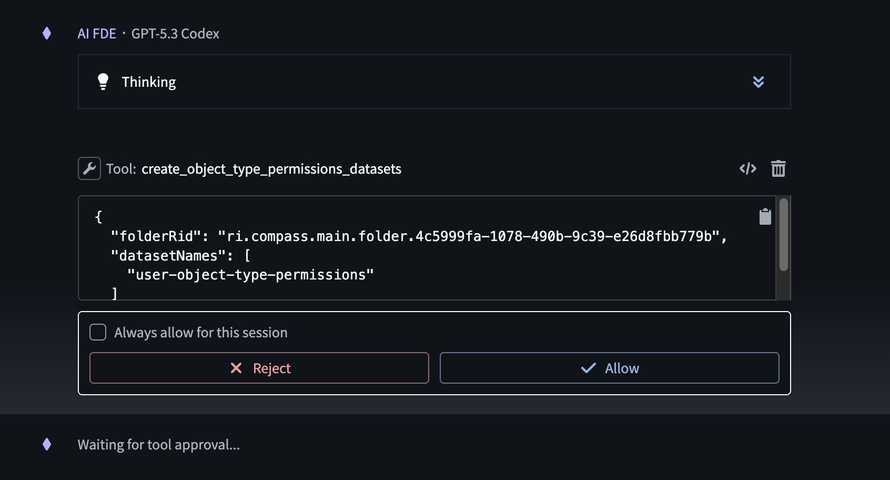

This page provides an overview of AI FDE's interface, navigation, and available controls.
Navigate to the AI FDE application and start by asking a question or making a request in the input field at the bottom of the page.

Sessions can be managed in the top toolbar, where you can create a new session and manage existing sessions.

AI FDE only has access to context that has been added to the chat.
Context can be added in various ways:


The chat outline can be found in a collapsible panel to the right, and contains a history of prompts, responses, and tools used in your session. Messages can be summarized or removed completely in the main chat or in the outline to prevent reaching the modelâs context window in long-running sessions. The outline also displays the number of tokens used for each message.
AI FDE provides customizable access to tools. Models perform better when only the subset of tools needed to accomplish the task are enabled. You can choose which tools to enable using the tools menu below the input field.

While prompting AI FDE with various tasks, you may be asked to approve tool usage. By default, executing tools requires approval in the following situations:

Tool approval for all tools can be customized in the tool selection panel. For example, relevant tools can be set to automatically execute on allowlisted branches and projects.